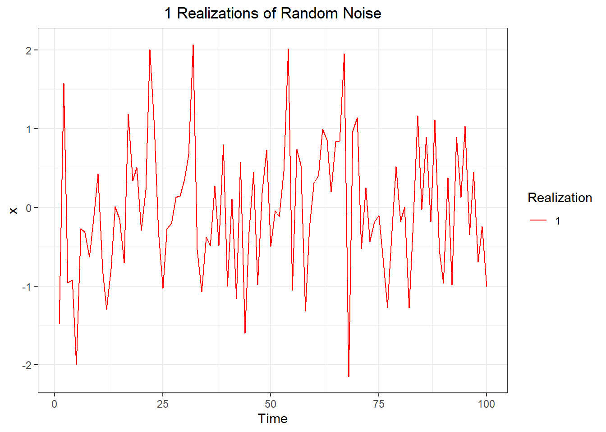
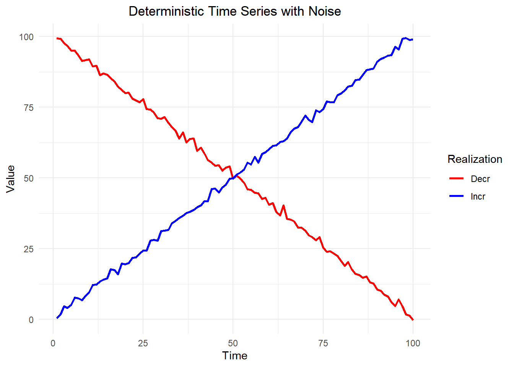
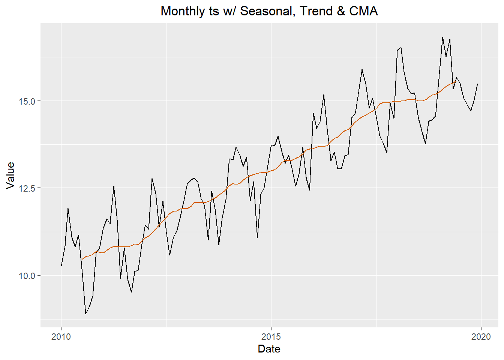
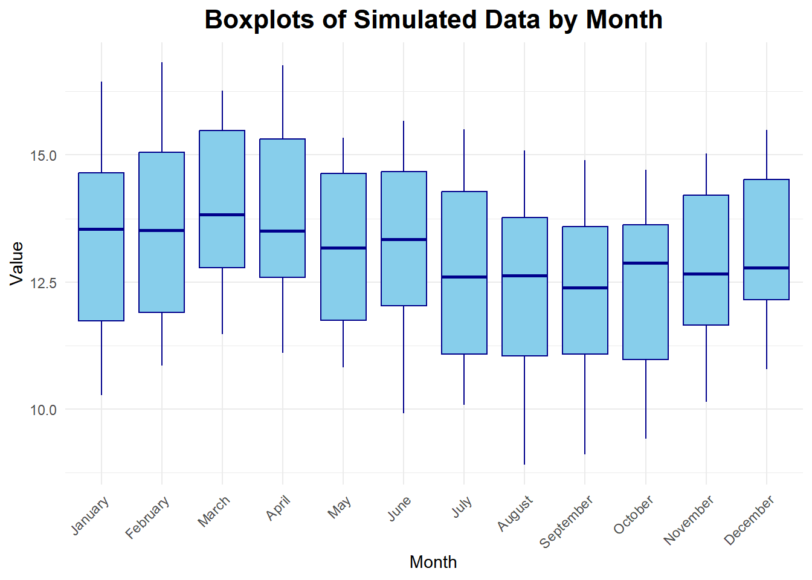
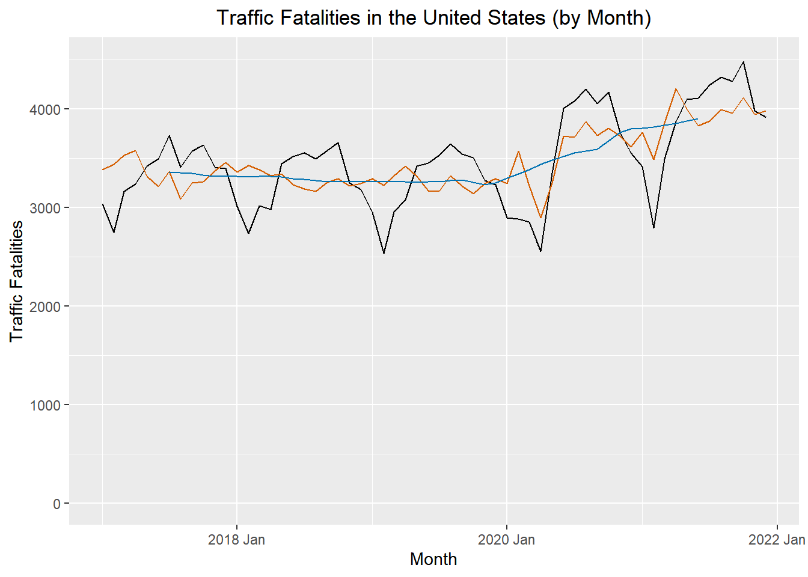
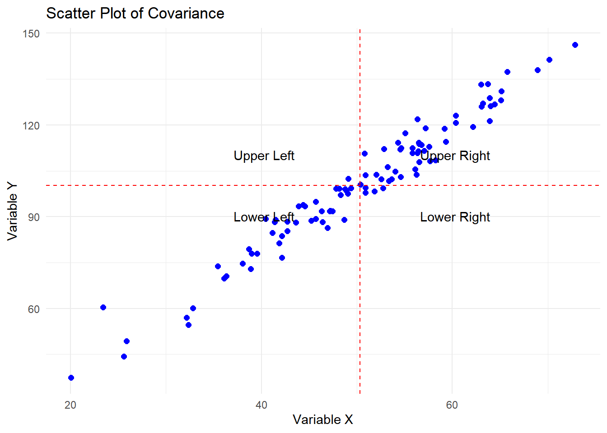

# Weather data for Rexburg
monthly_tsibble <- rio::import("https://byuistats.github.io/timeseries/data/rexburg_weather.csv") |>
# Convert 'dates' to Date format
mutate(date2 = ymd(dates)) |>
# Extract year and month from 'date2'
mutate(year_month = yearmonth(date2)) |>
# Group data by 'year_month'
group_by(year_month) |>
# Calculate mean of 'rexburg_airport_high' for each group
summarize(average_daily_high_temp = mean(rexburg_airport_high)) |>
# Remove grouping
ungroup() |>
# Convert data frame to time series tibble
as_tsibble(index = year_month)
# Display the resulting tibble
view(monthly_tsibble) Applied Time Series Analysis Outcomes
MATH 494R
1.2: Use technical language to describe the main features of time series data
- Define time series analysis
- A time series analysis quantifies the main features in data and the random variation. These reasons, combined with improved computing power, have made time series methods widely applicable in government, industry, and commerce.
- Define time series
- Time series are analysed to understand the past and to predict the future, enabling managers or policy makers to make properly informed decisions.
- Define sampling interval
- When a variable is measured sequentially in time over or at a fixed interval, known as the sampling interval, the resulting data form a time series.
- Define serial dependence or autocorrelation
- A correlation of a variable with itself at different times is known as autocorrelation or serial correlation.
- Define a time series trend
- In general, a systematic change in a time series that does not appear to be periodic is known as a trend. The simplest model for a trend is a linear increase or decrease, and this is often an adequate approximation.
- Define seasonal variation
- Repeated pattern within each year (or any other fixed time period).
- Define cycle
- Repeated pattern that does not correspond to some fixed natural period.
- Differentiate between deterministic and stochastic trends
1.2: Plot time series data to visualize trends, seasonal patterns, and potential outliers
- Plot a “ts” object
- Plot the estimated trend of a time series by computing the mean across one full period
1.3: Decompose time series into trends, seasonal variation, and residuals
- Define smoothing
- The centred moving average is an example of a smoothing procedure that is applied retrospectively to a time series with the objective of identifying an underlying signal or trend.
- Compute the centered moving average for a time series
- \(\hat m_t = \dfrac{\frac{1}{2}x_{t-6} + x_{t-5} + \cdots + x_{t-1} + x_t + x_{t+1} + \cdot + x_{t+5} + \frac{1}{2} x_{t+6}}{12}\).
- Estimate the trend component using moving averages
- There are various ways to estimate the trend \(m_t\) at time t, but a relatively simple procedure, is just use the cma formula for \(x_t\). Orange line = CMA. Figure 3
1.3 Plot time series data to visualize trends, seasonal patterns, and potential outliers
- Plot the estimated trend of a time series using a moving average.
- Make box plots to examine seasonality.
- Interpret the trend and seasonal pattern observed in a time series
1.4: Use R to describe key features of time series data
- Import CSV data and convert to tsibble format
1.4: Decompose time series into trends, seasonal variation, and residuals
- Implement additive decomposition
- A simple additive decomposition model is given by \(x_t = m_t + s_t + r_t\), where \(m_t\) is the trend, \(s_t\) is the seasonal component, and \(r_t\) (or in the book: where \(z_t\) is an error term) is the random component. (1.5.2)
- Explain how to remove seasonal variation using an estimate for seasonal component of a time series
- To remove the seasonal variation from a time series, we can subtract the estimated seasonal component from the original time series. This results in a seasonally-adjusted time series that can be used for further analysis.
- It is common to present economic indicators, such as unemployment percentages, as seasonally adjusted series.This highlights any trend that might otherwise be masked by seasonal variation attributable, for instance, to the end of the academic year, when school and university leavers are seeking work. (1.5.3)
- Compute the estimators of seasonal variation for an additive model
\(\hat s_t\): The centered moving average, \(\hat m_t\), is then used to compute the monthly additive effect, \(\hat s_t\).
\(\bar {\hat s_t}\): calculate the mean of the \(\hat s_t\) values for each month. We will call this \(\bar {\hat s_t}\),
\(\bar{\bar {\hat s_t}}\): the unadjusted monthly additive components.
\[ \bar s_t = \bar {\hat s_t} - \bar{\bar {\hat s_t}} \]
where \(\bar {\hat s_t}\) is the mean of the \(\hat s_t\) values corresponding to month \(t\), and \(\bar{\bar {\hat s_t}}\) is the mean of the \(\bar {\hat s_t}\) values.
\(\bar s_t\): This yields \(\bar s_t\), the seasonally adjusted mean for each month.
Calculate the random component for an additive model
We calculate the random component by subtracting the trend and seasonally adjusted mean from the time series:
\[ \text{random component} = x_t - \hat m_t - \bar s_t \]
Compute a seasonally-adjusted time series based on an additive model
The seasonally adjusted series is computed by subtracting \(\bar s_t\) from each of the observed values:
\[ \text{seasonally adjusted series} = x_t - \bar s_t \]. The figure below illustrates the original time series (in black), the centered moving average \(\hat m_t\) (in blue), and the seasonally adjusted series (in red). Figure 5
1.5: Decompose time series into trends, seasonal variation, and residuals
- Explain the differences between additive and multiplicative models
- in Models where they are dominated by a trend and or seasonal effect, then classical additive/multiplicative models are more common.
- Multiplicative Model : R’s multiplicative model: this implies that the error term, \(z_t\) (or \(r_t\)), has a mean of 1, rather than 0.
- Additve model \(x_t = m_t + s_t + z_t\) vs multiplicative book \(x_t = m_t * s_t + z_t\) or multiplicative r define as \(x_t = m_t * s_t * z_t\)
- Seasonal Component
Additive:\(s_t = \sin \left( \frac{t\pi}{6} \right) + \frac{1}{2}\cos\left(\frac{t \pi}{18} \right)\)
The r seasonal formula in the code corresponds to: \[s_t = b \sin \left( \frac{t}{12} \cdot 2 \pi \right) + c \cos \left( \frac{t}{12} \cdot 2 \pi \cdot 3 \right)\]
Components:
- Sinusoidal Component:
\[b \sin \left( \frac{t}{12} \cdot 2 \pi \right)\]- \(b = 1\): The amplitude of the sine wave.
- \(\frac{t}{12} \cdot 2 \pi\): Converts \(t\), the month number, into a cycle based on a 12-month period.
- Cosine Component: \[c \cos \left( \frac{t}{12} \cdot 2 \pi \cdot 3 \right)\]
- \(c = 0.5\): The amplitude of the cosine wave.
- \(\frac{t}{12} \cdot 2 \pi \cdot 3\): Introduces a higher frequency cycle over the same 12-month period.
- Sinusoidal Component:
Additive Seasonal Component: \(s_t\) \[\text{seasonally adjusted series} s_t = x_t - \bar s_t\]
Seasonally Adjusted Means \(\bar s_t\) \[ \bar s_t = \bar {\hat s_t} - \bar{\bar {\hat s_t}} \] where \(\bar {\hat s_t}\) is the mean of the \(\hat s_t\) values corresponding to month \(t\), and \(\bar{\bar {\hat s_t}}\) is the mean of the \(\bar {\hat s_t}\) values.
Montly Additive Effect \(\hat s_t\) \[ \hat s_t = x_t - \hat m_t \] The centered moving average, \(\hat m_t\), is then used to compute the monthly additive effect, \(\hat s_t\)
spacer
Multiplicative Seasonal Component \(s_t\)
Seasonally Adjusted Means \(\bar s_t\) \[ \bar s_t = \frac{ \left( \bar {\hat s_t} \right) }{ \left( \bar {\bar {\hat s_t}} \right) } \] Divide each of the \(\bar {\hat s_t}\) values by \(\bar {\bar {\hat s_t}}\) to get \(\bar s_t\), the seasonally adjusted factor for quarter \(t\). (Note that the mean of the \(\bar s_t\) values will be 1.) \(\bar {\hat s_t}\) = mean(\(\hat s_t\)) (unique like mean of Jan or mean of 1st Q) \(\bar {\bar {\hat s_t}}\) = mean(\(\bar {\hat s_t}\)) - overallmean mean of \(\bar {\hat s_t}\)
Monthly/quaterly Adjusted Means \(\hat s_t\): \[ \hat s_t = \dfrac{ x_t }{ \hat m_t } \] The centered moving average, \(\hat m_t\), is then used to compute the quarterly multiplictive effect, \(\hat s_t\):
Centered MA is calculated the same way as additive for this step.
Code
# 1.5 lesson code sample # computes the 4-quarter centered moving average (m_hat) apple_ts $% apple_ts |> mutate( m_hat = ( (1/2) * lag(revenue, 2) + lag(revenue, 1) + revenue + lead(revenue, 1) + (1/2) * lead(revenue, 2) ) / 4 )
spacer
spacer
Multiplicative The seasonal formula in the multiplicative model corresponds to: \[s_t = e^{b \sin \left( \frac{t}{12} \cdot 2 \pi \right) + c \cos \left( \frac{t}{12} \cdot 2 \pi \cdot 3 \right) + 1}\]
Components:
- Exponential Seasonal Component:
\[ e^{b \sin \left( \frac{t}{12} \cdot 2 \pi \right) + c \cos \left( \frac{t}{12} \cdot 2 \pi \cdot 3 \right) + 1} \]- \(b = 1\): The amplitude of the sine wave.
- \(c = 0.5\): The amplitude of the cosine wave.
- \(\frac{t}{12} \cdot 2 \pi\): Converts \(t\), the month number, into a 12-month sinusoidal cycle.
- \(\frac{t}{12} \cdot 2 \pi \cdot 3\): Introduces a higher frequency cycle over the same 12-month period.
- \(+1\): Ensures the seasonal component is strictly positive.
- \(b = 1\): The amplitude of the sine wave.
- Multiplicative Combination:
- The seasonal component \(s_t\) is multiplied with the trend \(m_t\) and error term \(z_t\) to construct the time series: \[ x_t = m_t \cdot s_t \cdot z_t \]
- Exponential Seasonal Component:
- Random Component \(r_t\) or \(z_t\)
additive: \(r_t = x_t - \hat m_t - \bar s_t\) spacer \[r_t = x_t - \hat m_t - \bar s_t\]
multiplicative:
$$ ignore this money signs (see source comment)
\[z_t = \dfrac{ x_t }{ \hat m_t \cdot \bar s_t }\]
- Implement multiplicative decomposition This can be found in code for chapter 1, and by reviewing the lesson 1.5 code.
- Compute the estimators of seasonal variation for a multiplicative model
- Calculate the random component for a multiplicative model Random Error Term (Error Plot): \[ e_t = \frac{x_t}{m_t \cdot s_t} \]
- Compute a seasonally-adjusted time series based on a multiplicative model
Random Error Term (Error Plot): \[ e_t = \frac{x_t}{m_t \cdot s_t} \]
Trend: \[ m_t = e^{a \cdot t} \]
Seasonal: \[ s_t = e^{b \cdot \sin\left(\frac{2 \pi t}{12}\right) + c \cdot \cos\left(\frac{6 \pi t}{12}\right) + 1} \]
Seasonally-Adjusted Time Series \[ x_t = m_t \cdot s_t \cdot z_t \]2.1: Compute & Interpret the key statistics used to describe the linear relationship between two variables
- Compute & Interpret the sample mean
- It is just doing the mean of a variable. \[ \bar{x} = \frac{1}{n} \sum_{i=1}^{n} x_i \]
- Need to refresh of difference for doing stats on a sample vs a population
Sample Mean The sample mean \(\bar{x}\) is the average value of the data points in the sample. It summarizes the central tendency and is computed as: \[ \bar{x} = \frac{1}{n} \sum_{i=1}^n x_i \]
- Compute & Interpret the sample variance
Sample Variance The sample variance \(s^2\) measures the spread of data around the sample mean. It quantifies variability and is calculated as: \[ s^2 = \frac{1}{n-1} \sum_{i=1}^n (x_i - \bar{x})^2 \] It provides insight into how much individual observations deviate from the average, capturing the data’s dispersion.
- Compute & Interpret the sample standard deviation
Sample Standard Deviation The sample standard deviation \(s\) is the square root of the sample variance: \[ s = \sqrt{s^2} \] It represents the average deviation of data points from the mean in the same units as the original data, facilitating easier interpretation.
- Compute & Interpret the sample covariance
Sample Covariance The sample covariance \(Cov(x, y)\) quantifies the linear relationship between two variables \(x\) and \(y\). It is calculated as: \[ Cov(x, y) = \frac{1}{n-1} \sum_{i=1}^n (x_i - \bar{x})(y_i - \bar{y}) \] A positive covariance indicates that \(x\) and \(y\) increase together, while a negative covariance suggests an inverse relationship.
- Compute & Interpret the sample correlation coefficient
Sample Correlation Coefficient The sample correlation coefficient \(r\) standardizes the covariance, giving a dimensionless measure of linear association between \(x\) and \(y\): \[ r = \frac{Cov(x, y)}{s_x s_y} \] It ranges between \(-1\) (perfect negative linear relationship) and \(+1\) (perfect positive linear relationship), with \(0\) indicating no linear relationship.
- Explain sample covariance using a scatter plot
Covariance measures the linear relationship between two variables, x and y. It evaluates how changes in x correspond to changes in y:
Positive covariance: y increases as x increases (points cluster in the lower-left and upper-right quadrants).
Negative covariance: y decreases as x increases (points cluster in the upper-left and lower-right quadrants).
Zero covariance: No linear relationship (points are scattered with no clear pattern).
2.2: Define key terms in time series analysis
- Define the ensemble of a time series (2.2 2.2.2)
- The ensemble of a time series is the set of all possible time series that could theoretically be generated by the underlying stochastic model. Each time series in the ensemble is a distinct realization of the model. For practical purposes, the ensemble represents the entire population of time series that share the same probability structure, even though we typically have access to only one observed realization in practice.
- Define the expected value (or mean function) of a time series model (2.2.2)
The expected value of a time series model
The expected value, commonly abbreviated to expectation, E, of a variable, or a function of a variable, is its mean value in a population. So E(x) is the mean of x, denoted \(\mu\), and \[E[(x - \mu)^2]\] is the mean of the squared deviations about \(\mu\), better known as the variance \(\sigma^2\) of x. The standard deviation, \(\sigma\) is the square root of the variance.
The mean function of a time series model is, denoted \(\mu(t)\): \[ \mu(t) = E[x_t] \] and, in general, is a function of t. The expectation in this definition is an average taken across the ensemble of all the possible time series that might have been produced by the time series model(see fig 2.2 in the book). The ensemble constitutes the entire population.
- Define the sample estimate of the population mean of a time series (2.2.2 e2.7)
The sample estimate of the population mean is the arithmetic mean of the observed values in a single realization of the time series. It is calculated as: \[ \bar{x} = \sum_{t=1}^n \frac{x_t}{n} \] where \(n\) is the number of observations. Equation (2.7) does rely on an assumption that a sufficiently long time series characterises the hypothetical model. Such models are known as ergodic1, and the models in this book are all ergodic.
- Define the variance function of a time series model (2.2.1 2.2.4 e2.9)
The variance function of a time series model, denoted \(\sigma^2(t)\), that is stationary in the mean is \[ \sigma^2(t) = E[(x_t - \mu)^2] \] (is the mean of the squared deviations pdf pg 27)
which can, in principle, take a different value at every time t. But we cannot estimate a different variance at each time point from a single time series. To progress, we must make some simplifying assumption. If we assume the model is stationary in the variance, this constant population variance, σ2, can be estimated from the sample variance
- State the constant variance estimator for a time series model
The constant variance estimator? not sure about this one \[ \hat{\sigma}^2 = \frac{1}{n-1} \sum_{t=1}^n (x_t - \bar{x})^2\]
- Explain the stationarity assumption
A time series is said to be stationary if its statistical properties, such as the mean, variance, and autocorrelation, are constant over time. Need to confirm this
- Explain the stationary variance assumption (2.2.4 e2.9)
Not sure about this This can continue from the Variance Function in equation 2.9 to 2.10 maybe.
The variance function of a time series model that is stationary in the mean is which can, in principle, take a different value at every time t. But we cannot estimate a different variance at each time point from a single time series. To progress, we must make some simplifying assumption. If we assume the model is stationary in the variance, this constant population variance, σ2, can be estimated from the sample variance:
- Define lag
Lag refers to the time difference or the number of steps between two points in a time series. It is denoted by \(k\) and often appears in contexts like autocorrelation or autocovariance calculations. For example:
- Lag \(k\) compares \(x_t\) with \(x_{t+k}\), where \(k\) is the number of time steps separating the observations.
- Define autocorrelation
Autocorrelation A correlation of a variable with itself at different times is known as autocorrelation or serial correlation. If a time series model is second-order stationary, we can define an autocovariance function (acvf), \(y_k\), as a function of the lag k.
- Second-Order Properties
The mean and variance play an important role in the study of statistical distributions because they summarise two key distributional properties– a central location and the spread. Similarly, in the study of time series models, a key role is played by the second-order properties, which include the mean, variance, and serial correlation (described below).
Consider a time series model that is stationary in the mean and the variance. The variables may be correlated, and the model is second-order stationary if the correlation between variables depends only on the number of time steps separating them. The number of time steps between the variables is known as the lag. A correlation of a variable with itself at different times is known as autocorrelation or serial correlation. If a time series model is second-order stationary, we can define an autocovariance function (acvf), \(y_k\), as a function of the lag \(k\) (e2.11):
\[ \gamma(k) = E[(x_t - \mu)(x_{t+k} - \mu)] \]
The function \(\gamma_k\) does not depend on t because the expectation, which is across the ensemble, is the same at all times t. This definition follows naturally from Equation (2.1) by replacing \(x\) with \(x_t\) and \(y\) with \(x_{t+k}\) and noting that the mean \(\mu\) is the mean of both \(x_t\) and \(x_{t+k}\). The lag \(k\) autocorrelation function (acf), \(p_k\), is defined by(e2.12)
\[ \rho_k = \frac{\gamma_k}{\sigma^2} \]
It follows from the definition that \(p_0\) is 1.
It is possible to set up a second-order stationary time series model that has skewness; for example, one that depends on time t. Applications for such models are rare, and it is customary to drop the term ‘second-order’ and use ‘stationary’ on its own for a time series model that is at least second order stationary. The term strictly stationary is reserved for more rigorous conditions. The acvf and acf can be estimated from a time series by their sample equivalents. The sample acvf, \(c_k\), is calculated as (e2.13)
\[ c_k = \frac{1}{n} \sum_{t=1}^{n-k} (x_t - \bar{x})(x_{t+k} - \bar{x}) \]
Note that the autocovariance at lag 0, \(c_0\), is the variance calculated with a denominator \(n\). Also, a denominator \(n\) is used when calculating \(c_k\), although only \(n − k\) terms are added to form the numerator. Adopting this definition constrains all sample autocorrelations to lie between −1 and 1. The sample acf is defined as (e2.14)
\[ r_k = \frac{c_k}{c_0} \]
- Define the second-order stationary time series
A time series model is second-order stationary if it satisfies the following conditions:
The mean and variance are constant over time.
The correlation between variables depends only on the lag \(k\), which is the number of time steps separating them.
The autocovariance function (acvf), \(\gamma_k\), is defined as:
- The acvf, \(\gamma_k\), quantifies the covariance between observations separated by a lag \(k\), and it does not depend on the specific time \(t\). This ensures the temporal consistency required for second-order stationarity: (e2.11)
\[ \gamma(k) = E[(x_t - \mu)(x_{t+k} - \mu)] \]
The autocorrelation function (acf), \(\rho_k\), is: (e2.12)
- The acf, \(\rho_k\), normalizes the autocovariance by the variance, providing a dimensionless measure of the strength and direction of the relationship between observations at lag \(k\):
\[ \rho_k = \frac{\gamma_k}{\sigma^2} \]
- Define the autocovariance function, acvf(2.2.5 e2.11)
The acvf quantifies the covariance between observations separated by a lag \(k\), and it does not depend on the specific time \(t\). This ensures the temporal consistency required for second-order stationarity
- Explain the autocovariance (acvf) function in Equation (2.2.5 e2.11)
We can define the autocovariance function (acvf), \(\gamma_k\), as a function of the lag k:
\[ \gamma_k = E[(x_t - \mu)(x_{t+k} - \mu)] \]
need to add what the variables do.
- Explain the lag k autocorrelation (acf) function in Equation (2.12)
The lag \(k\) autocorrelation function is the normalized version of the autocovariance function, defined as:
\[ \rho(k) = \frac{\gamma(k)}{\sigma^2} \]
not sure how reliable this explanation is, but leaving since it seems correct, but it is all from ai, just need to confirm.
\(\rho(k)\) measures the strength of linear association between observations \(k\) units apart, scaled to lie between \(-1\) and \(1\).
A value of \(+1\) or \(-1\) indicates perfect positive or negative linear correlation, respectively, while \(0\) indicates no linear relationship.
It simplifies the interpretation of autocovariance by removing the influence of scale.
- Define the sample acvf, ck (2.2.5 e2.13)
The sample autocovariance function (acvf)
\[ c_k = \frac{1}{n} \sum_{t=1}^{n-k} (x_t - \bar{x})(x_{t+k} - \bar{x}) \]
- Define the sample autocorrelation function, acf (2.2.5 e2.14)
The sample autocorrelation function (acf).
\[ r_k = \frac{c_k}{c_0} \]
Important for 2.2 outcomes
The covariance is a measure of linear association between two variables (x, y). (2.2.1)
2.2: Calculate sample estimates of autocovariance and autocorrelation functions from time series data
- Define the sample autocovariance function, c_k
- Define the sample autocorrelation function, r_k
index
This is code and definitions use in outcomes






Footnotes
A time series model that is stationary in the mean is ergodic in the mean if the time average for a single time series tends to the ensemble mean as the length of the time series increases (2.2 2.2.3).↩︎